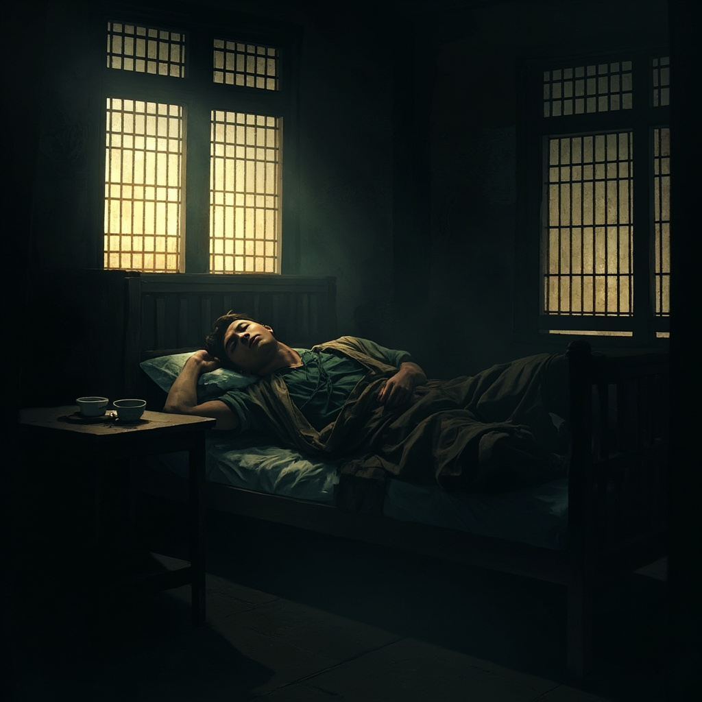
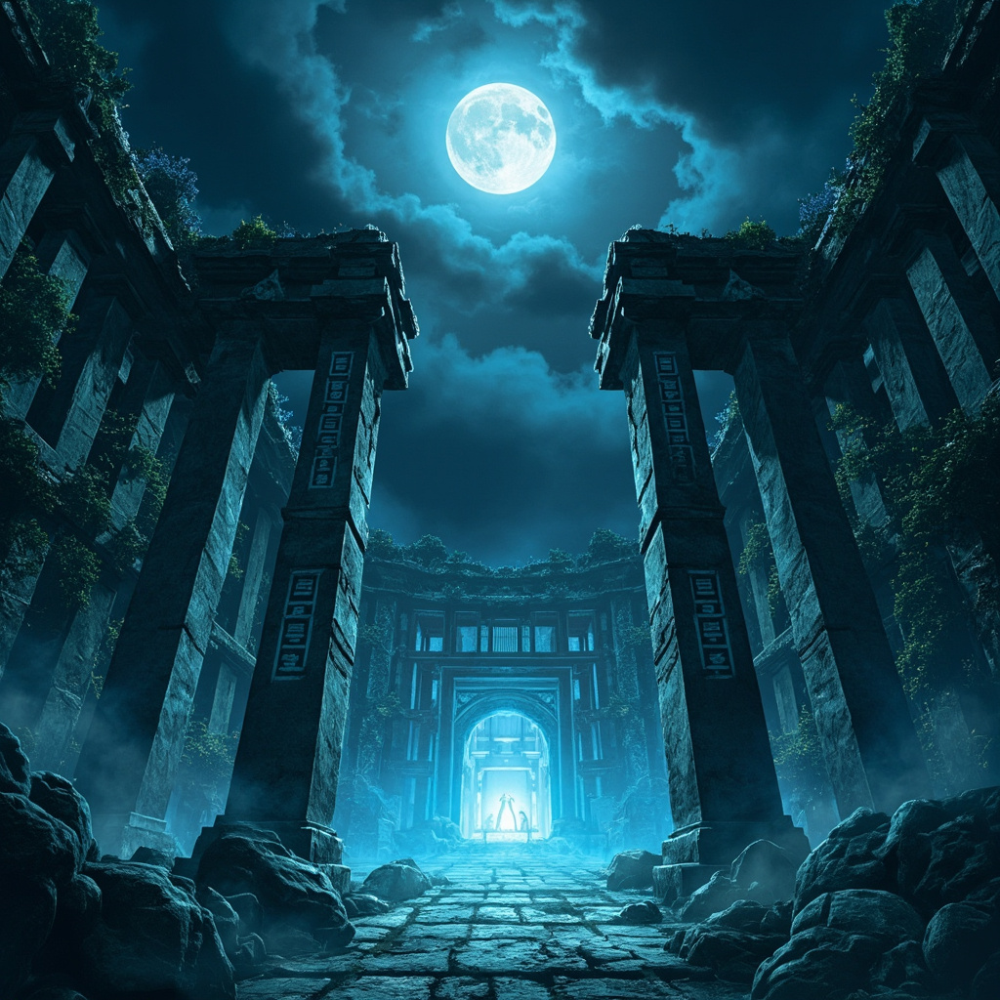

第1章 残魂初醒
晨光透过糊着薄纸的木窗，在青砖地面上投下一片昏黄。
顾言睁开眼，喉咙里涌上一股腥甜。他猛地坐起身，干裂的嘴唇渗出血丝，胸口的钝痛提醒着他。这具身体已经濒临油尽灯枯。
不对。
他低头看向自己的手掌，骨节分明却瘦得皮包骨头，指甲缝里还残留着干涸的泥垢。这不是他的手。
上一瞬他还在渡劫台迎接九天神雷，下一瞬天劫反噬、魂飞魄散，再睁眼却成了这具陌生躯壳的主人。
"三少爷，您可算醒了。"
一个苍老的声音从门口传来。顾言循声望去，只见一个佝偻老者端着药碗站在门槛外，脸上堆着讨好的笑。
他认出这人了。
残存的记忆如潮水般涌来——这具身体的原主人也叫顾言，顾家三少爷，庶出，母亲早亡，在府中地位甚至不如有些体面的下人。三天前被嫡出的二哥顾长风叫去训话，回来后就一病不起。
而眼前这碗药……
顾言的瞳孔微缩。他闻到了一股极淡的苦杏仁味。若是常人根本察觉不出，但前世他师承药王谷，对各类毒物了然于胸。这剂量，足以让一个凡人吐血昏迷三日，再拖下去便是回天乏术。
"三少爷，趁热喝吧。"老者将药碗往前递了递，眼神闪烁。
顾言没有伸手。
他盯着老者看了片刻，忽然开口："福伯，我病了这几日，二哥那边可有什么吩咐？"
老者手微微一僵，旋即堆起笑："二少爷说了，三少爷身子弱，要好生将养着。这药是二少爷特意吩咐厨房熬的，用料十足……"
"是吗。"顾言垂下眼帘，"那便放下吧。"
福伯如释重负地将药碗搁在床头矮几上，又寒暄几句便匆匆离去。
脚步声渐远。顾言却没有去碰那碗药。他闭上眼，试图调动体内灵力，却发现经脉几乎枯竭，只有一丝若有若无的气机在丹田处游走。
练气一层。他苦笑一声。前世他渡劫期的修为，如今竟沦落至此。
然而就在此时，他眉心处忽然一热。
一道玄之又玄的信息涌入脑海——
【命格图鉴·残卷】
【当前寿元：三十二载】
【命格：早夭之相】
【备注：此命格已被外力篡改，原命主本应早夭于七岁，现苟延残喘至今。外力介入者——因果纠缠深重。】
顾言猛地睁大眼睛。命格图鉴竟然跟着他一起重生了！
这是他前世在某处秘境偶然觉醒的天赋神通，能够洞察他人命格气运。只是彼时他修为尚浅，这门神通时灵时不灵，他也没太在意。没想到重活一世，命格图鉴非但没有消失，反而变得清晰无比。
而且……"外力篡改？"他低声喃喃。原主人本应七岁夭折，却活到了现在。是谁在背后插手？顾长风？不像，他盯上这具身体不过是近几日的事。
顾言将这个疑问暂且压下，目光重新落在那碗药上。福伯说这是顾长风"特意吩咐厨房熬的"。
好一个特意。他勾起唇角，眸中却没有半分笑意。前世他纵横修真界数百年，什么阴谋诡计没见过？顾长风这种拙劣的栽赃手段，放在那些大门派里连三岁孩童都骗不过。
只是，现在的他确实太弱了。练气一层，经脉枯竭，寿元受损，身边连个可用之人都没有。想要正面硬刚嫡子出身的顾长风，无异于痴人说梦。
但他从来不逞匹夫之勇。
顾言端起药碗，凑近鼻端仔细辨别。片刻后，他眼中闪过一丝了然。
这毒叫"寒心散"，无色无味，缓慢侵蚀心脉，服用后初期只是昏睡乏力，等毒素深入骨髓便会心脉断裂而死。难对付的不是毒，而是下毒之人。顾长风选中"寒心散"，显然是想让他病死，而不是被毒死。
可惜他遇到了顾言。
他在床板夹层里翻出了一小包药粉——解毒散，原主人歪打正着留下的，好东西，配合寒心散的药理，半个时辰内能压制毒性，恢复部分行动能力。
但压制毒性只能治标，不能治本。顾长风既然起了杀心，就不会只备这一手。
他必须尽快找到破局之法。
顾言快速整理脑海中残存的记忆：顾家，清河城三大家族之一，主营灵药生意。家主顾天城膝下三子——长子顾长空三年前外出历练失踪至今生死未卜；次子顾长风野心勃勃觊觎家主之位；幼子便是这具身体，废物一个，毫无存在感。
三日前，顾长风忽然召见原主人，回来后原主人就开始一病不起。原主人虽然废物，但不傻。顾长风找他必然不是什么好事，而原主人很可能知道了什么不该知道的东西——大哥顾长空留下的那枚玉佩。

正当他苦思冥想之际，院外忽然传来一阵喧哗。
"三少爷可在？家主有请。"
顾言快步走到窗边，透过缝隙望去，只见一名身着锦袍的中年男子正站在院中，身后跟着几个家丁。那男子面容威严，眉宇间与顾长风有几分相似，却更加深沉内敛。
顾天城。顾家家主，筑基后期的修士，竟然亲自来了。
他来做什么？是顾长风告了状，还是另有其事？
无论如何，这都是一个变数。
他转身回到床边，蘸了点药粉吞入口中，一股清凉的气息顺着喉咙滑入腹中，胸口的钝痛顿时减轻了几分。整理了一下身上皱巴巴的旧衣，他推开房门，迎着院中那道威严的目光走了过去。
"父亲。"
顾天城上下打量了他一眼，目光深沉如渊："你病了？"
"劳父亲挂心，只是偶感风寒，并无大碍。"
顾天城没有说话，只是静静地看着他。那目光仿佛能看透人心，让顾言后背微微发凉。
许久之后，顾天城才收回目光，淡淡道："随我来。"
穿过几重院落，二人来到一处僻静的偏厅。顾天城挥退左右，只留下顾言一人。
门扉合上的瞬间，顾天城忽然开口："长风今日告诉我，说你偷盗府中灵药，毒害下人。"
顾言心头一凛，面上却不动声色："儿子不知二哥为何要这样说。"
"是吗？"顾天城转过身，目光灼灼地盯着他，"那你倒是说说，三日前长风找你，究竟所为何事？"
顾言知道，关键时刻到了。他抬起头，与顾天城对视。明明修为天差地别，他却没有丝毫退缩。
"三日前，二哥问我……"他顿了顿，一字一顿道，"大哥留下的那枚玉佩，如今在何处。"
顾天城瞳孔骤缩。
空气仿佛凝固了。
"你说什么？"顾天城的声音低沉，带着一丝压抑的怒意，"长空的事，你怎么会知道？"
顾言垂下眼帘："儿子不知道大哥的事，只是三日前二哥问起，儿子不知如何作答，二哥便恼了。后来发生的事情，儿子也记不太清了。"
他没有撒谎，只是隐去了部分真相。
顾天城沉默了。良久之后，他长叹一声："长风他……唉。"
那一声叹息里，有失望，有无奈，也有一丝说不清道不明的复杂情绪。
"你先回去，好生养病。"
"是。"
顾言躬身退出偏厅，心中却没有半分轻松。他知道，今日之事绝不会就此了结。顾长风不会善罢甘休，而那枚玉佩的秘密，迟早会将他卷入更大的漩涡。
只是眼下，他还有更重要的事情要做——压制毒性，恢复修为，寻找前世遗留的资源。
然后，让那些算计他的人付出代价。
他抬起头，望向远处连绵的屋脊。
后园的方向，有一处废弃的灵眼废墟。残存的记忆中，那里似乎埋藏着什么秘密……
或许，可以从那里开始。
